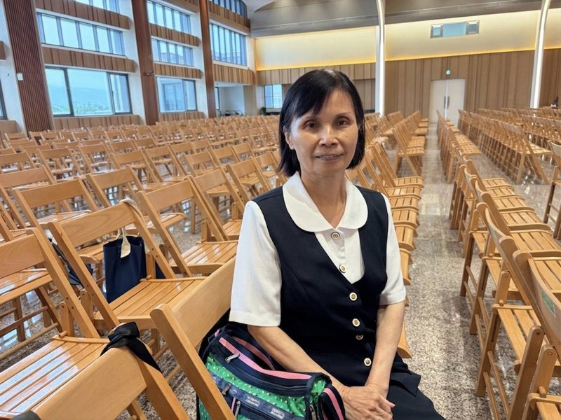

莊曉竹
正德佛堂



正德50週年 — 心得分享
發一崇德 莊曉竹
點傳師、講師、各位前賢，大家好：
感謝天恩師德，讓後學有機會在此分享心得。後學知道一貫道是在小學四年級時，某一個夏日午後，母親從佛堂回家順道接後學放學，路上聊起求道之事，所以母親應是後學的啟蒙。之後初次接觸佛堂，感受到道場的莊嚴與溫暖，讓後學心生嚮往。
在道場學習的過程中，後學深刻體會到道的尊貴與殊勝。願在未來的修辦路上，繼續努力，以報天恩師德。
（依莊曉竹道親心得整理，民國115年6月）